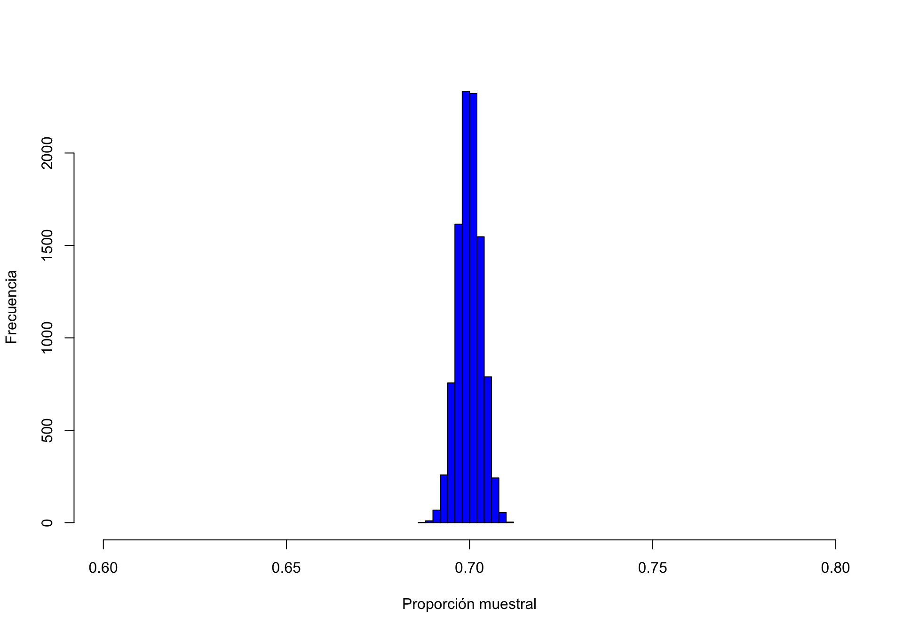
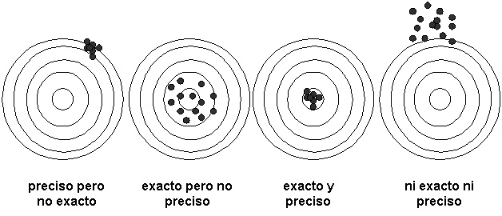

poblacion = c(rep(1, 11900000), rep(0, 5100000))
set.seed(314159)
p_muestra = mean(sample(poblacion, 20000, replace = FALSE))
p_muestra[1] 0.7Estamos interesados en modelizar un fenómeno que presenta un aspecto aleatorio. Para plantear y contestar preguntas sobre probabilidades de sucesos asociados, buscamos disponer de un modelo para la distribución de los valores de la variable de interés. Iremos construyendo nuestro conocimiento sobre esta distribución al recopilar una muestra de valores, que iremos recogiendo al repetir un experimento.
Pero surge una pregunta evidente:
Pregunta ¿Cómo sabemos que nuestra estimación es fiable? ¿Por qué limitándose a unas 20000 personas, se puede extropolar el resultado con confianza a una población de decenas de millones? Además está claro que el resultado que obtengo depende de la muestra particular que haya escogido, si hubiera escogido otra muestra, habría obtenido otro resultado. Este hecho se llama la variabilidad muestral.
Para contestar a esta pregunta debemos procurar estudiar la variabilidad muestral, es decir conocer la distribución de los valores que toma una cantidad calculada a partir de una muestra concreta, como la proporción por ejemplo, respecto a todas las muestras que podría extraer. Si esta distribución presenta poca dispersión, tendremos bastante confianza en que el proceso de estimación es poco sensible a la muestra concreta escogida, puesto que la probabilidad de que otra muestra haya arrojado un valor muy distinto será pequeña.
Una manera de realizar este estudio de la variabilidad muestral es a través de simulaciones realizadas con el ordenador. Podemos simular la extracción repetida de muestras de tamaño 20000 de una población. Supongamos por ejemplo, que consideramos la retransmisión en España de la final de la copa del Mundo 2022 que consiguió una cuota de casí 70%, entre los 17000000 espectadores en ese momento, fuente noticia en rtve.es. Supongamos que la proporción de espectadores que vieron la final fue realmente 0. 7. Vamos a definir un vector con 17000000 elementos de los cuales el 70%, es decir 11900000, son “1”s, y el 30%, es decir 5100000, son “0”s. Este vector representará la “población” de todos los espectadores en este momento. Los “1”s representan las personas que vieron la final por la tele. Escogeremos al azar una muestra de 20000 elementos entre los elementos del vector población y calcularemos la proporción de “1”s en esta muestra. Comprobaremos si está cerca de la proporción de “1”s en la población, que vale 0.7.
poblacion = c(rep(1, 11900000), rep(0, 5100000))
set.seed(314159)
p_muestra = mean(sample(poblacion, 20000, replace = FALSE))
p_muestra[1] 0.7Para esta muestra concreta, la proporción muestral de “1”s es muy próxima a la proporción poblacional, por lo que nuestra estimación usando una muestra de “solo” 20000 personas nos da muy buen resultado.
set.seed que permite fijar la semilla de la secuencia de números pseudoaleatorios que se van a generar. Admite un número como argumento, que podemos escoger como una cantidad fácil de recordar. El fijar la semilla permite reproducir simulaciones aunque impliquen la generación de números aleatorios.Para convencernos de que este buen comportamiento es lo esperable para muestras de este tamaño, vamos a repetir muchas veces (10000 veces por ejemplo), la extracción de una muestra de 20000 personas en la población. Para hacerlo, podríamos repetir el código anterior en un bucle for, pero vamos a aprovechar la librería purrr del “tidyverse”, que permite aplicar una función a los elementos de una lista o de un vector.
library(purrr)
p_muestras = map_dbl(
1:10000,
~ mean(sample(poblacion, 20000, replace = FALSE))
)
head(p_muestras)[1] 0.70430 0.69660 0.69565 0.70330 0.70065 0.69795Podemos ahora representar un histograma de las 10000 proporciones muestrales obtenidas y calcular algún percentil asociado.
hist(
p_muestras,
col = "blue",
xlab = "Proporción muestral",
ylab = "Frecuencia",
main = "",
xlim = c(0.6, 0.8)
)
Comprobamos en el histograma que todas las muestras simuladas llevan a una estimación de la proporción muy próxima a la proporción poblacional. De hecho, 99.9% de las muestras presentan un error menor de 1 punto respecto al valor poblacional y 87.4% de las muestras un error menor que medio punto.
En conclusión, este estudio de simulación nos lleva a tener confianza en la precisión de nuestra estimación si extraemos una muestra de 20000 personas para aproximar la proporción en una población de 17000000 personas. En este tema exploraremos esta misma idea de estudiar la “distribución en el muestreo” no solamente a través de simulaciones sino gracias a la obtención de resultados teóricos manipulando probabilidades.
Inferir sobre un parámetro presente en el modelo de distribución de una variable consiste precisamente en sacar información sobre su valor a partir de una muestra de valores de la variable.
Toda la teoría desarrollada acerca de los sondeos, del control de calidad, del diseño de experimentos, y en realidad, de toda la teoría estadistica se basa de manera esencial en el estudio de la variabilidad muestral de cantidades calculadas a partir de una muestra.
Como primer paso en el estudio de la distribución en el muestreo, formalizamos el concepto de muestra aleatoria simple como la variable multidimensional asociada a la repetición de un experimento simple.
Definición 1.1 Sea una distribución \(f\). Consideramos \(n\) variables aleatorias independientes \(X_1, X_2, \ldots, X_n\), que tengan cada una la misma distribución \(f\). La variable aleatoria multidimensional \((X_1, X_2, \ldots, X_n)\) es una muestra aleatoria simple de \(f\).
Decimos que las variables \(X_1, X_2, \ldots, X_n\) son independientes e identícamente distribuidas, lo que se abrevia como i.i.d.
Nota: Por la propiedad de independencia, si \(f\) es una función de densidad y \((X_1, X_2, \ldots, X_n)\) es una muestra aleatoria simple de \(f\), la función de densidad conjunta de la muestra es el producto de las marginales: \[f_{X_1, X_2, \ldots, X_n}(x_1, x_2, \ldots, x_n) = f(x_1)\cdot f(x_2)\cdot \cdots \cdot f(x_n).\]
La situación de modelización más habitual donde consideraremos una muestra aleatoria simple corresponde a la repetición \(n\) veces de manera independiente de un experimento simple al que está asociado una variable \(X\) con distribución \(f\). Si llamamos \(X_1, X_2, \ldots, X_n\) a las variables que recogen los valores de \(X\) obtenidos en las \(n\) repeticiones, \((X_1, X_2, \ldots, X_n)\) es una muestra aleatoria simple de \(f\).
Es el caso del ejemplo descrito en la sección anterior que consiste en tirar \(n\) veces una moneda. Si \(X_1, X_2, \ldots, X_n\) denotan los valores obtenidos (+ ó c), \((X_1, X_2, \ldots, X_n)\) es una muestra aleatoria simple de \(f\), la distribución de \(X\) definida como \(\mathbb{P}[X=c]=p\) y \(\mathbb{P}[X=+]=1-p.\)
En cambio, si consideramos el ejemplo de una encuesta para estimar la tasa de participación, la población de la que se escoge la muestra es finita (unos 35 000 000), y se trata de una extracción sin reemplazo. La probabilidad de que la persona escogida conteste “Sí” va cambiando a medida que vamos entrevistando a gente y depende de las respuestas previas de los encuestados. Por lo tanto, las variables \(X_1, X_2, \ldots, X_n\) no son i.i.d. y el vector asociado no forma una muestra aleatoria simple.
Si \(N_S\) es el número de personas en el censo que tienen intención de ir a votar, y \(N\) es el tamaño del censo. Suponiendo que \(x_1, x_2, \ldots, x_n\) toman valores 0 ó 1, con la convención de que \(x_i = 1\) si el entrevistado número \(i\) declara que tiene intención de ir a votar. Tenemos que \[\mathbb{P}(X_i = 1) = \frac {N_S - \sum_{1\leq j< i}x_j} {N - (i - 1)}.\]
Sin duda, entre las cantidades más relevantes asociadas a una muestra destaca la media muestral. Empezaremos por lo tanto por estudiar qué podemos decir sobre su distribución muestral, es decir la distribución de los valores que puede tomar respecto a todas las muestras que se podrían extraer. Como primer paso, la obtención de su esperanza y varianza es sencilla y nos proporciona información valiosa sobre su centro y su dispersión:
Proposición 1.1 Si \((X_1, X_2, \ldots, X_n)\) es una muestra aleatoria simple de \(f\), que tiene esperanza y varianza, consideramos su media \(\bar{X}_n =\frac 1 n \sum_{i = 1, \ldots, n} X_i\), se cumple:
Prueba. La esperanza de \(\bar{X}\) se obtiene usando la propiedad de linealidad de la esperanza, mientras que para su varianza, se usa el hecho de que la varianza de la suma de variables independientes es la suma de sus varianzas.

Como medida de la dispersión de una muestra, es útil considerar la varianza muestral que definimos a continuación:
Definición 1.2 Si \((X_1, X_2, \ldots, X_n)\) es una muestra aleatoria simple de \(f\), definimos la varianza muestral \(S_n^2\) como \[ S_n^2 = \frac 1 {n - 1} \sum_{i = 1}^n \left(X_i - \bar{X}_n\right)^2.\] Es sencillo demostrar la fórmula alternativa para \(S_n^2\): \[S_n^2 = \frac n {n - 1} \left(\bar{X^2}_n - (\bar{X}_n)^2\right),\] donde \(\overline{X^2}_n= \frac 1 n \sum_{1\leq i \leq n} X_i^2\) es la media de los cuadrados de los valores de la muestra.
Antes de obtener la distribución de la varianza muestral en el caso de una distribución normal, podemos obtener su esperanza, para cualquier distribución \(f\) con varianza finita.
Proposición 1.2 Si \((X_1, X_2, \ldots, X_n)\) es una muestra aleatoria simple de \(f\) con varianza \(\sigma_f^2\), \[\mathbb{E}[S_n^2] = \sigma_f^2.\]
Prueba. Escribimos \[\mathbb{E}[S_n^2] =\frac 1 {n - 1} \sum_{i = 1}^n \mathbb{E}\left[(X_i - \bar{X}_n)^2\right]= \frac 1 {n-1}\sum_{i = 1}^n \mathbb{E}\left[\left(X_i -\mu_f - \frac 1 n\sum_{1\leq j\leq n}(X_j -\mu_f)\right)^2\right].\] Ahora, \[\left(X_i -\mu_f - \frac 1 n\sum_{1\leq j\leq n}(X_j -\mu_f)\right)^2 = \left(\frac {n - 1} n (X_i - \mu_f) - \frac 1 n\sum_{1\leq j\leq n, j\neq i}(X_j -\mu_f)\right)^2\] Al desarrollar este cuadrado nos encontramos con \((\frac {n - 1} n (X_i - \mu_f))^2 + \frac 1 n^2\sum_{1\leq j\leq n, j\neq i}(X_j -\mu_f)^2\) y con productos de la forma \((\frac {n - 1} n (X_i - \mu_f)\frac 1 n(X_j -\mu_f))\), para \(j\neq i\). Todos estos últimos productos tienen esperanza nula porque las variables \(X_i\) y \(X_j\) son independientes.
Obtenemos en consecuencia que \[\begin{align} \mathbb{E}[S_n^2] &=& \frac 1 {n - 1} \sum_{i = 1}^n \mathbb{E}\left[(\frac {n - 1} n (X_i - \mu_f))^2+ \frac 1 {n^2}\sum_{1\leq j\leq n, j\neq i}(X_j -\mu_f)^2\right]\\ &=& \frac 1 {n - 1} n\left(\frac {(n -1)^2}{n^2}+ \frac {n - 1} {n^2}\right)\sigma_f^2\\ &=& \sigma_f^2. \end{align}\]
Deducimos de la Proposición 1.2 que el centro de los valores de la distribución de la varianza muestral coincide con la varianza de \(f\), que llamamos también la varianza “poblacional”.
En las secciones anteriores, hemos caracterizado la esperanza y la varianza de la distribución de los valores de la media muestral \(\bar{X}_n\) así como la esperanza de la varianza muestral \(S^2_n\). Es destacable el hecho de que estos resultados se obtienen sin hipótesis sobre la forma de la distribución \(f\) de \(X\). ¿Podemos decir algo más sobre la distribución de estos estadísticos si asumimos un modelo concreto para \(f\)? En el caso en que hemos modelizado la v.a \(X\) por una distribución Normal \(\mathcal{N} (\mu,\sigma^2)\) somos capaces de caracterizar con detalles la distribución muestral de \(\bar{X}_n\) y de \(S^2_n\), e incluso obtener un resultado sobre su distribución conjunta. La siguiente proposición establece resultados de gran importancia para la teoría de la inferencia.
Proposición 1.3 Consideramos una muestra aleatoria simple de una distribución normal \(\mathcal{N}(\mu,\sigma^2)\), \(\bar{X}_n\) es su media muestral y \(S^2_n\) la varianza muestral, se cumple
Prueba. Cualquier combinación de variables normales sigue una distribución normal, por lo que deducimos que \(\bar{X}_n\) tiene una distribución normal, con esperanza y varianza obtenidas en la Proposición 1.2, lo que demuestra el punto 2.
Por otra parte, calculemos la covarianza de \(\bar{X}_n\) con cualquier \(X_i - \bar{X}_n\), para \(i = 1,\ldots, n\): \[\begin{align*} \mathbb{E}[(X_i-\bar{X}_n)(\bar{X}_n - \mu)] &=& \mathbb{E}[(X_i-\mu + \mu - \bar{X}_n)(\bar{X}_n - \mu)]\\ &=& \mathbb{E}[(X_i - \mu)(\bar{X}_n - \mu)] -\mathbb{E}[ (\bar{X}_n - \mu)^2]\\ &=& \frac 1 n \sum_{j=1}^n\mathbb{E}[(X_i - \mu)(X_j - \mu)] - \sigma^2/n\\ \end{align*}\] Al ser las variables \(X_1, \ldots, X_n\) independientes, \(\mathbb{E}[(X_i - \mu)(X_j - \mu)] = 0\) excepto cuando \(i=j\), en cuyo caso, es igual a la varianza de \(X_i\), es decir \(\sigma^2\). Concluimos que \(cov(\bar{X}_n, X_i - \bar{X}_n) = 0\) para todo \(i = 1, \ldots, n\). Puesto que todas estas variables son variables normales, deducimos que \(\bar{X}_n\) es independiente de \(X_i - \bar{X}_n\) para todo \(i = 1, \ldots, n\) y, por lo tanto, independiente de cualquier función de \(X_1 - \bar{X}_n, \ldots, X_n - \bar{X}_n\), en particular de \(S_n^2\). Esto demuestra el punto 1.
Para demostrar el punto 3., procederemos por inducción sobre \(n\). Recordemos que el cuadrado de una variable normal estándar es una ji-cuadrado con 1 grado de libertad, y que la suma de \(k\) variables ji-cuadrado independientes con \(g_1, \ldots, g_k\) grados de libertad sigue una distribución ji-cuadrado con \(g_1+\hdots+g_k\) grados de libertad.
Consideremos \(n = 2\). Tenemos que \[S_2^2/\sigma^2 = \frac 1 {\sigma^2}\left((X_1 - \frac {X_1 + X_2} 2)^2 +(X_2 - \frac {X_1 + X_2} 2)^2 \right)= \frac 1 {2\sigma^2} (X_1 - X_2)^2.\] El término de la derecha es el cuadrado de una normal estándar, es decir una ji-cuadrado con 1 grado de libertad, lo que demuestra el caso \(n=2\).
Supongamos ahora que el punto 3 es cierto para \(n-1\), es decir asumimos que \((n-2)S_{n_1}/\sigma^2\sim \chi^2_{n-2}\). Vamos a usar el siguiente lema:
Lema 1.1 \[\mbox{For $n\geq 2$, }\quad (n - 1)S^2_n =(n - 2)S^2_{n-1}+\frac {n-1}{n} (X_n -\bar{X}_{n -1})^2. \tag{1.2}\]
Para establecer Ecuación 1.2, desarrollamos \(S_n^2\):
\[\begin{align*} (n - 1)S^2_n =\sum_{i =1}^n (X_i - \bar{X}_n)^2 &=& \sum_{i =1}^{n-1} (X_i - \bar{X}_n)^2 +(X_n - \bar{X}_n)^2\\ &=& \sum_{i =1}^{n-1} (X_i - \bar{X}_{n-1}+ \bar{X}_{n-1}-\bar{X}_n)^2 +(X_n - \bar{X}_n)^2\\ &=& \sum_{i =1}^{n-1} (X_i - \bar{X}_{n-1})^2+ (n- 1)(\bar{X}_{n-1}-\bar{X}_n)^2 +(X_n - \bar{X}_n)^2\\ &=& (n - 2)S^2_{n-1}+ (n- 1)(\bar{X}_{n-1}-\bar{X}_n)^2 +(X_n - \bar{X}_n)^2\\ &=& (n - 2)S^2_{n-1}+ (n- 1)(\frac{\bar{X}_{n-1}-X_n} n)^2 +(\frac {n-1} n (X_n - \bar{X}_{n-1}))^2\\ &=& (n - 2)S^2_{n-1}+(\frac {n-1} n (X_n - \bar{X}_{n-1}))^2.\\ \end{align*}\]
Hemos usado \(\sum_{i =1}^{n-1}(X_i -\bar{X}_{n-1})=0\) y \(\bar{X}_n =\frac {(n-1) \bar{X}_{n - 1}} n + \frac {X_n} n\).
Al ser \(X_n\) y \(\bar{X}_{n-1}\) variables normales independientes, deducimos que \(\frac 1 \sigma \frac {n-1} n (X_n - \bar{X}_{n-1})\) es una normal estándar, por lo que su cuadrado es una ji-cuadrado con 1 grado de libertad. Es independiente de \(\bar{X}_{n-1}\), por el punto 2, y por la hipótesis de inducción, \((n - 2)S^2_{n-1}/\sigma^2\sim \chi^2_{n-2}\). Por la propiedad de sumas de variables ji-cuadrado independientes, deducimos que \((n - 1)S_n^2/ \sigma^2\sim \chi^2_{n-1}\), lo que completa la demostración por inducción del punto 3.
En una subsección posterior, veremos que este resultado es válido asíntoticamente (cuando \(n\) tiende hacia \(+\infty\)), para una clase muy grande de distribuciones \(f\) de \(X\).
Las distribuciones y los resultados obtenidos en la Proposición 1.1 son esenciales cuando nuestro modelo consiste en una distribucíon normal. La Ecuación 1.1 en particular será la base para construir en temas posteriores una estimación de la media “poblacional” \(\mu\) que incluya un margen de error. Sin embargo, esta fórmula comprende dos parámetros a priori desconocidos, \(\mu\) y \(\sigma\). Para centrarnos en \(\mu\) es natural sustituir en ella \(\sigma\) por el valor de la desviación típica de la muestra \(S_n\). Es lo que hizo Gosset a principios del siglo XX, obteniendo la densidad resultante y publicando el resultado bajo el seudónimo de “Student”.
Proposición 1.4 Consideramos \((X_1,\ldots,X_n)\) una muestra aleatoria simple de una distribución \(\mathcal{N}(\mu,\sigma^2)\), sea \(\bar{X}\) la media muestral, la distribución de los valores de \[T=\frac{\bar{X}-\mu}{S/\sqrt{n}}\] tiene por densidad
\[ f_{t_{n -1}}(t)\propto \frac 1 {(1+t^2/(n-1))^{n/2}},\quad -\infty<t<\infty, \tag{1.3}\] donde el símbolo \(\propto\) significa ``es proporcional a’’, es decir que existe una constante \(K\) tal que \(f_{t_{n -1}}(t) = K \frac 1 {(1+t^2/(n-1))^{n/2}},\quad -\infty<t<\infty\).
La distribución que admite esta densidad se llama distribución t de Student con \(n-1\) grados de libertad. Escribimos \(T\sim t_{n-1}\).
La distribución t de Student con \(k\) grados de libertad está definido por su función de densidad: \[ f_{t_k}(t)= \frac {\Gamma(\frac{k+1} 2)}{\Gamma(\frac k 2)}\frac 1 {\sqrt{k\pi}} \frac 1 {(1+t^2/k)^{(k+1)/2}},\quad -\infty<t<\infty,\] donde \(\Gamma\) denota la función Gamma.1
Prueba. Vamos a demostrar que \(T=\frac{\bar{X}-\mu}{S/\sqrt{n}}\) tiene por densidad la expresión dada en la Ecuación 1.3. Para ello, introducimos las dos variables \(Z = (\bar{X}_n - \mu)/\sqrt{\sigma/n}\) que sigue una distribución normal estándar y \(Y = (n-1)S_n^2/\sigma^2\) que sigue una distribución ji-cuadrado con \(n-1\) grados de libertad. Tenemos que \(T = Z/\sqrt{Y/(n-1)}\). Como son independientes, la densidad conjunta de \(Z\) y \(Y\) es el producto de sus densidades: \[ f_{Z, Y}(z, y) = \frac 1 {\sqrt{2\pi}} e^{-z^2/2}\frac 1 {\Gamma(\frac{n - 1} 2) 2^{(n - 1)/2}} y^{(n - 1)/2 - 1} e^{- y/2}, \quad -\infty<z<\infty,\ 0<y<\infty.\] Sea \(\Phi\) la aplicación que transforma \((Z, Y)\) en \((T, Y)\), \(\Phi(z, y) = (z/\sqrt{y/(n - 1)}, y)\). Se trata de un difeormorfismo de \(\mathbb{R} \times\mathbb{R}^+\) a \(\mathbb{R} \times\mathbb{R}^+\). Deducimos que la densidad conjunta de \((T, Y)\) es \[f_{T, Y}(t, y) = f_{Z, Y}(\Phi^{-1}(t, y))\frac 1 {J\Phi(\Phi^{-1}(t, y))},\] donde \(J\Phi\) es el determinante Jacobiano de \(\Phi\). Tenemos que \(J\Phi(z, y) = \frac 1 {\sqrt{y/(n -1)}}\), por lo que \[ f_{T, Y}(t, y) = \frac 1 {\sqrt{2\pi}} e^{-\frac {t^2 y}{2(n-1)}}\frac 1 {\Gamma(\frac{n - 1} 2) 2^{(n - 1)/2}} y^{(n - 1)/2 - 1} e^{- y/2}\sqrt{y/(n-1)}, \quad -\infty<t<\infty,\ 0<y<\infty.\] Integramos respecto a \(y\) para obtener la densidad marginal de \(T\): \[ f_{T}(t) = \frac 1 {\sqrt{\pi(n-1)}} \frac 1 {\Gamma(\frac{n - 1} 2) 2^{n/2}}\int_0^{+\infty} y^{n/2 - 1} e^{- y/2(\frac {t^2} {n-1} + 1)} dy.\] Reconocemos en el integrando una función proporcional a la densidad de una distribución Gamma de parámetros \(\alpha = n/2\) y \(\beta=2/(\frac {t^2} {n-1} + 1)\). Deducimos de la Ecuación 1.4 que la integral del término de la derecho es igual a \(\Gamma(n/2)2^{n/2}/(\frac {t^2} {n-1} + 1)^{n/2}\).
En resumen, hemos obtenido que \[f_{T}(t) = \frac 1 {\sqrt{\pi(n-1)}} \frac {\Gamma(n/2)} {\Gamma(\frac{n - 1} 2) }\frac 1 {(1+t^2/(n-1))^{n/2}}.\]
La distribución de \(T\) depende por lo tanto del tamaño \(n\) de la muestra, a través de los llamados ``grados de libertad’’.
La distribución t tiene colas más pesadas que la distribución Normal, lo que es intuitivamente natural puesto que, al obtenerse \(T\) sustituyendo \(\sigma\) por \(S\), el denominador de \(T\) presenta ahora también variabilidad. Esta variabilidad en el denominador resulta en que \(T\) puede tomar con más probabilidad valores más extremos. Sin embargo, si los grados de libertad aumentan, la variabilidad de \(S\) disminuye, y la distribución t de Student asociada se parece más a una Normal. En la Figura 1.3, están representadas la densidad de la distribución t de Student para varios valores del paramétro de grados de libertad.
Otra distribución muy importante en las aplicaciones está asociada al cociente de variables ji-cuadrado independientes y se utiliza por lo tanto para comparar varianzas muestrales correspondientes a variables diferentes o a grupos diferentes. Se llama la distribución \(F\) de Snedecor y la introducimos en la siguiente definición.
Proposición 1.5 Consideremos \(U_1\) y \(U_2\) dos variables independientes de distribución ji-cuadrado con \(p_1\) y \(p_2\) grados de libertad respectivamente. El cociente \(F = \frac {U_1/p_1}{U_2/p_2}\) admite la densidad \[f_F(x) = \frac {\Gamma(\frac {p_1 + p_2} 2)}{\Gamma(p_1)\Gamma(p_2)}(\frac{p_1}{p_2})^{p_1}\frac{x^{p_1/2-1}}{(1+ \frac {p_1}{p_2} x)^{\frac{p_1+p_2} 2}}. \tag{1.5}\] Esta distribución se llama F de Snedecor con \(p_1\) y \(p_2\) grados de libertad y escribimos \(F \sim F_{p_1, p_2}\).
Prueba. Para obtener la densidad del cociente que nos interesa, procedemos como para la densidad t de Student. Escribimos la distribución conjunta de \(U_1\) y \(U_2\) como el producto de las distribuciones marginales, consideramos el difeomorfismo de \(\mathbb{R}^+\times\mathbb{R}^+\) a \(\mathbb{R}^+ \times\mathbb{R}^+\), \((F, U_2)=\Phi(U_1, U_2) = (\frac {U_1/p_1}{U_2/p_2}, U_2)\). Su determinante Jacobiano es \(p_2/(p_1 u_2)\). Deducimos la densidad conjunta de \(F\) y \(U_2\) que integramos respecto a \(u_2\) para obtener la densidad marginal de \(F\). Reconociendo que el integrando es proporcional a una densidad Gamma, obtenemos Ecuación 1.5.
Consideremos dos variables aleatorias normales \(X\) e \(Y\) con varianzas \(\sigma_2^X\) y \(\sigma_2^Y\), así como \(X_1, \ldots, X_{n_1}\) y \(Y_1, \ldots, Y_{n_2}\) dos muestras aleatorias simples de \(X\) y \(Y\) respectivamente. Una consecuencia de la Proposición 1.5 es que \[\frac{(n_1-1)S_{n_1}^X/\sigma_X^2}{(n_2-1)S_{n_2}^Y/\sigma_Y^2}\sim F_{n_1-1, n_2-1}.\]
La función Gamma tiene la expresión siguiente: para cualquier real \(\alpha>0\), \(\Gamma(\alpha)=\int_{0}^\infty t^{\alpha-1}e^{-t}dt.\) De hecho, tiene asociada una familia de distribuciones, las llamadas distribuciones Gamma. Una distribución Gamma admite dos parámetros \(\alpha>0\), y \(\beta> 0\) y su densidad es \[ f_{\alpha, \beta}(x) = \frac 1 {\Gamma(\alpha)\beta^\alpha} x^{\alpha - 1} e^{-x/\beta}, \quad y>0 \tag{1.4}\]↩︎